คู่มือใช้งานเครื่องมือ · ระดับ Free
เส้นโค้งปั๊มและพัดลม
Pump & Fan Curve
FREE
สำหรับช่างเทคนิคที่เพิ่งเริ่มงาน — อ่านแล้วทำตามได้เอง
ใช้เวลาฝึกประมาณ 45 นาที
เคสตัวอย่าง: โรงงาน A ปั๊มน้ำหล่อเย็น 1,450 RPM มอเตอร์ 22 kW (ข้อมูลสมมุติ)
อ.หนึ่ง กลับทวี / Aj. Nueng Klubtavee
tripleeenergytools.com
หน้าจอเครื่องมือ — เปิดได้จากเมนู Free ของเว็บไซต์
รุ่นเครื่องมือ: Free commit 9cca317 · จับภาพ 18 พ.ย. 2569 · คู่มือ Rev00
เครื่องมือนี้ตอบคำถามอะไร
คู่มือใช้งาน · สร้างเส้นโค้งปั๊มและพัดลม (Pump & Fan Curve Builder) · ระดับ Free
2 / 25
| คำถามหน้างาน | ใช้แท็บไหน | เคสโรงงาน A ได้ |
|---|---|---|
| ปั๊มยังดีอยู่ไหม — ประสิทธิภาพเท่าไร | กรอกข้อมูล → Pump/Fan Curve | สูงสุด 78.5 % |
| ปั๊มทำงานดีที่สุดที่ flow เท่าไร (BEP) | Pump/Fan Curve | 55.0 m³/h · 39.5 m |
| ปิดวาล์วแล้วหัวสูงสุดเท่าไร (Shutoff) | Pump/Fan Curve | 49.0 m |
| ตอนนี้ปั๊มเดินอยู่ที่จุดไหนของเส้นโค้ง | System Curve | 60.0 m³/h · 37.5 m |
| ใส่ VFD ลดรอบ แล้วกำลังลดเท่าไร | Affinity Laws | ลด 40.1 % (ระบบมีหัวคงที่) |
| ส่งตารางผลให้หัวหน้า/ลูกค้า | รายงาน | 7 จุด + Export CSV |
💡 เคล็ดลับ
ใช้ได้ทั้งปั๊มน้ำและพัดลม — เลือกชนิดเครื่องก่อน แล้วหน่วยในตารางเปลี่ยนให้เอง (m ↔ Pa, m³/h ↔ CMH)
แผนที่หน้าจอ
คู่มือใช้งาน · สร้างเส้นโค้งปั๊มและพัดลม (Pump & Fan Curve Builder) · ระดับ Free
3 / 25
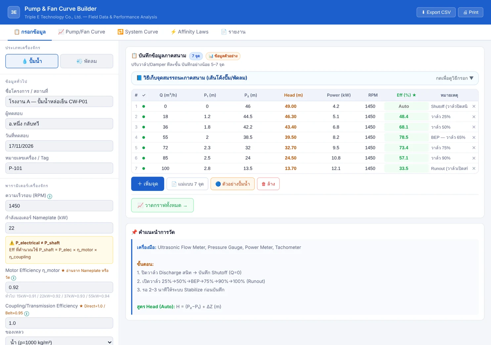
1
2
3
4
5
6
1
แท็บ 5 แท็บ — กรอกข้อมูล · Pump/Fan Curve · System Curve · Affinity Laws · รายงาน
2
ชนิดเครื่อง: ปั๊มน้ำ / พัดลม
3
ข้อมูลทั่วไป (ชื่อโครงการ ผู้ทดสอบ วันที่ Tag)
4
พารามิเตอร์เครื่องจักร — รอบ มอเตอร์ η ΔZ
5
ตารางบันทึกข้อมูลภาคสนาม — หัวใจของเครื่องมือ
6
คำแนะนำการวัด (เปลี่ยนตามชนิดเครื่อง)
แถบซ้ายเลื่อนลงได้ — ล่างสุดคือ System Curve Parameters (ใช้ในขั้นที่ 5)
เปิดหน้ามาครั้งแรก เครื่องมือโหลดข้อมูลตัวอย่างปั๊ม 7 จุดให้แล้ว (ป้ายส้ม "ข้อมูลตัวอย่าง")
แถบน้ำเงินบนสุดมีปุ่ม Export CSV และ Print
⚠️ ระวัง
หน้านี้ไม่บันทึกข้อมูลไว้ในเครื่อง — ปิดหน้าแล้วข้อมูลหาย เก็บผลด้วย Export CSV หรือ Print เป็น PDF
เปิดบนมือถือ และสลับภาษา
คู่มือใช้งาน · สร้างเส้นโค้งปั๊มและพัดลม (Pump & Fan Curve Builder) · ระดับ Free
4 / 25
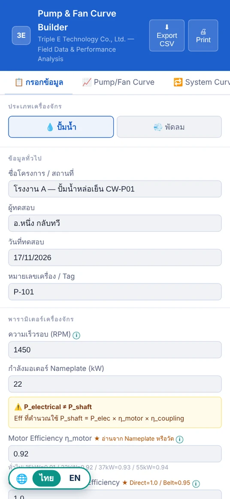
บนมือถือหน้าจอเรียงเป็นคอลัมน์เดียว: แถบซ้ายอยู่บน เลื่อนลงจะเจอตารางบันทึกข้อมูล
แถบแท็บด้านบนเลื่อนซ้าย-ขวาได้ ถ้ามองไม่เห็นแท็บ Affinity/รายงาน
ตารางบันทึกกว้างกว่าจอ — ปัดตารางไปทางซ้ายเพื่อดูคอลัมน์ RPM, Eff และหมายเหตุ
ปุ่ม ไทย | EN ลอยอยู่ด้านล่าง กดสลับภาษาได้ ค่าที่กรอกไว้ไม่หาย
💡 เคล็ดลับ
จดค่าลงกระดาษหน้างาน แล้วกรอกบนคอมพิวเตอร์จะเร็วกว่า — มือถือเหมาะกับเปิดดูผลหน้างาน
คำศัพท์ 8 คำที่ต้องรู้ก่อนเริ่ม
คู่มือใช้งาน · สร้างเส้นโค้งปั๊มและพัดลม (Pump & Fan Curve Builder) · ระดับ Free
5 / 25
| คำ | ความหมายแบบสั้น | จำง่าย ๆ |
|---|---|---|
| Head (H) | แรงดันที่ปั๊มเพิ่มให้ของเหลว คิดเป็น "ความสูงของน้ำ" (m) | H = P₂ − P₁ + ΔZ |
| Shutoff | จุดที่ flow = 0 (ปิดวาล์วด้านส่ง) ได้หัวสูงสุดของปั๊ม | ปลายซ้ายของเส้นโค้ง |
| Runout | จุดที่เปิดวาล์วสุด flow มากสุด หัวต่ำสุด | ปลายขวาของเส้นโค้ง |
| BEP | Best Efficiency Point — จุดที่ประสิทธิภาพสูงสุด | เดินใกล้ BEP = ประหยัด สึกน้อย |
| P_elec · P_shaft | กำลังไฟฟ้าที่วัดได้ · กำลังที่เพลาปั๊มได้รับจริง | P_shaft = P_elec × η_motor × η_coupling |
| System curve | หัวที่ระบบท่อต้องการตาม flow: หัวคงที่ + K × Q² | ระบบ "ขอ" — ปั๊ม "ให้" |
| Operating point | จุดตัดของเส้นปั๊มกับเส้นระบบ = จุดที่ปั๊มเดินจริง | จุดเขียวในแท็บ System |
| Affinity laws | กฎลดรอบ: Q ∝ N · H ∝ N² · P ∝ N³ | ใช้ประเมิน VFD |
💡 เคล็ดลับ
ประสิทธิภาพที่ตารางแสดงคือประสิทธิภาพของปั๊ม (จากเพลาถึงน้ำ) — ประสิทธิภาพรวมทั้งชุด = η ปั๊ม × η มอเตอร์ × η คัปปลิ้ง ซึ่งต่ำกว่าเสมอ
เตรียมเครื่องมือวัดและข้อมูลก่อนเริ่ม
คู่มือใช้งาน · สร้างเส้นโค้งปั๊มและพัดลม (Pump & Fan Curve Builder) · ระดับ Free
6 / 25
| ค่าที่ต้องมี | เครื่องมือ/แหล่งข้อมูล | ค่าโรงงาน A |
|---|---|---|
| อัตราไหล Q (m³/h) | Ultrasonic flow meter แบบรัดท่อ | 0–100 m³/h (7 จุด) |
| ความดันด้านดูด P₁ และด้านส่ง P₂ | เกจความดันที่จุดวัดหน้า-หลังปั๊ม | แปลงเป็น m ก่อนกรอก |
| ระยะสูงระหว่างจุดต่อเกจสองตัว ΔZ | ระดับน้ำ / เลเซอร์วัดระดับ | 3 m |
| กำลังไฟฟ้า P_elec ทุกจุด | Power meter ที่ตู้มอเตอร์ | 4.2–12.1 kW |
| รอบ (RPM) | Tachometer หรือป้ายมอเตอร์ | 1,450 |
| η มอเตอร์ · การส่งกำลัง | ป้ายมอเตอร์ · ต่อตรง 1.0 / สายพาน ≈ 0.95 | 0.92 · 1.0 |
⚠️ ระวัง
เกจอ่านเป็น bar ต้องแปลงเป็น m ก่อนกรอก: น้ำ 1 bar ≈ 10.2 m (ของเหลวอื่นหารด้วยความถ่วงจำเพาะ) — กรอก bar ลงช่อง m ผลผิดทั้งตาราง
ขั้นที่ 1
เลือกชนิดเครื่อง และกรอกข้อมูลทั่วไป
คู่มือใช้งาน · สร้างเส้นโค้งปั๊มและพัดลม (Pump & Fan Curve Builder) · ระดับ Free
7 / 25
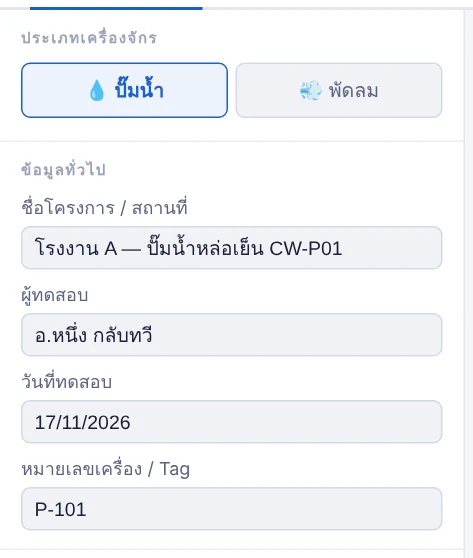
1
2
3
4
5
1
ปั๊มน้ำ — หน่วย m และ m³/h
2
พัดลม — หน่วย Pa และ CMH (ดูสไลด์ท้ายเล่ม)
3
ชื่อโครงการ/สถานที่ — ขึ้นหัวรายงาน
4
วันที่ทดสอบ (ใส่ให้อัตโนมัติเป็นวันนี้)
5
Tag เครื่อง — ใช้ชื่อเดียวกับป้ายหน้างาน
ข้อมูลทั่วไปไม่มีผลต่อการคำนวณ แต่ขึ้นหัวรายงานและชื่อไฟล์ CSV
เปลี่ยนชนิดเครื่อง: หัวตาราง หน่วย ปุ่มข้อมูลตัวอย่าง และคำแนะนำการวัดเปลี่ยนตาม
ขั้นที่ 2
พารามิเตอร์เครื่องจักร
คู่มือใช้งาน · สร้างเส้นโค้งปั๊มและพัดลม (Pump & Fan Curve Builder) · ระดับ Free
8 / 25
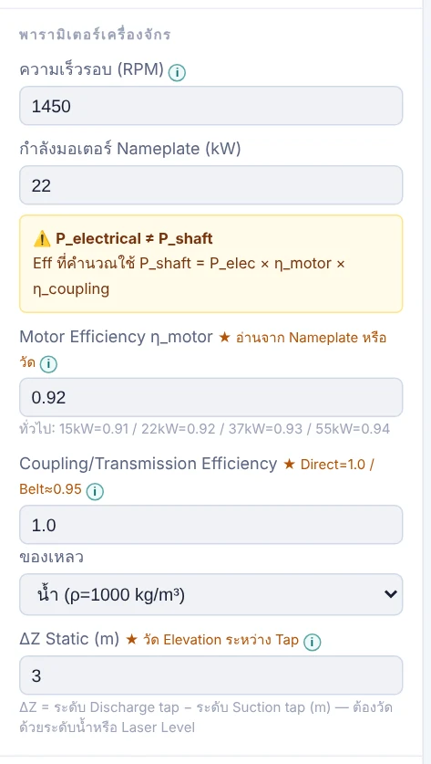
1
2
3
4
5
6
1
รอบ (RPM) ขณะทดสอบ — 1,450
2
กำลังมอเตอร์ตามป้าย — 22 kW (ใช้อ้างอิง ไม่เข้าสูตร)
3
η มอเตอร์ — 0.92 จากป้ายมอเตอร์
4
η การส่งกำลัง — ต่อตรง 1.0 · สายพาน ≈ 0.95
5
ชนิดของเหลว — น้ำ ρ = 1,000 kg/m³
6
ΔZ = ระดับจุดต่อเกจด้านส่ง − ด้านดูด — 3 m
แก้ช่อง η หรือ ΔZ ภายหลัง — Head และ Eff ทุกแถวคำนวณใหม่ให้ทันที
ΔZ ติดลบได้ ถ้าเกจด้านส่งอยู่ต่ำกว่าเกจด้านดูด
⚠️ ระวัง
ลืมใส่ ΔZ = Head ต่ำไป 3 m ทุกจุด → ประสิทธิภาพต่ำกว่าจริง (ดู What-if หน้าถัดไป)
ประสิทธิภาพคิดอย่างไร — ตัวอย่างจุด BEP
คู่มือใช้งาน · สร้างเส้นโค้งปั๊มและพัดลม (Pump & Fan Curve Builder) · ระดับ Free
9 / 25
| ขั้น | สูตร | จุดที่ 4 ของโรงงาน A |
|---|---|---|
| 1. Head | H = P₂ − P₁ + ΔZ | 38.5 − 2.0 + 3 = 39.50 m |
| 2. กำลังที่เพลา | P_shaft = P_elec × η_motor × η_coupling | 8.2 × 0.92 × 1.0 = 7.54 kW |
| 3. กำลังที่น้ำได้รับ | P_hyd = Q/3600 × H × ρ × g | 55/3600 × 39.50 × 1000 × 9.81 ≈ 5.92 kW |
| 4. ประสิทธิภาพปั๊ม | η = P_hyd ÷ P_shaft | 5.92 ÷ 7.54 = 78.5 % |
เครื่องมือคิดทั้ง 4 ขั้นให้เอง — กรอกแค่ Q, P₁, P₂, Power ในตาราง
จุด Shutoff (Q = 0) ไม่มีค่า Eff เพราะไม่มีน้ำไหล — ตารางแสดง "Auto"
ถ้าท่อดูดกับท่อส่งขนาดต่างกันมาก Head จริงจะมีผลต่างของความเร็วน้ำรวมอยู่ด้วย ซึ่งเครื่องมือไม่ได้คิด
💡 เคล็ดลับ
พัดลมใช้สูตรเดียวกันแต่ไม่มี ρ·g: η = (Q/3600 × ΔP) ÷ P_shaft เพราะ ΔP เป็น Pa อยู่แล้ว
ขั้นที่ 3
วิธีเก็บจุดหน้างาน
คู่มือใช้งาน · สร้างเส้นโค้งปั๊มและพัดลม (Pump & Fan Curve Builder) · ระดับ Free
10 / 25
เริ่มจากปิดวาล์วด้านส่ง (Shutoff) แล้วเปิดทีละขั้น 25 → 50 → 65 → 75 → 90 → 100 % รวม 7 จุด
แต่ละจุดรอให้ค่านิ่งก่อนอ่าน Q, P₁, P₂ และ kW พร้อมกัน
จุดเขียวในคอลัมน์ ✓ = มี Q และ Head ครบ เครื่องมือนำไปวาดกราฟ
กดหัวข้อ "วิธีเก็บจุดสมรรถนะภาคสนาม" เพื่อเปิด/ปิดคำแนะนำนี้
⚠️ ระวัง
อย่าเดินปั๊มที่วาล์วปิดนาน — น้ำในปั๊มร้อนขึ้นเร็ว อ่านค่าให้เสร็จเร็วที่สุดตามคำแนะนำของผู้ผลิตปั๊ม · ตอนเปิดวาล์วสุดดูกระแสมอเตอร์ไม่ให้เกินพิกัด
ขั้นที่ 3
ตารางบันทึกข้อมูลภาคสนาม
คู่มือใช้งาน · สร้างเส้นโค้งปั๊มและพัดลม (Pump & Fan Curve Builder) · ระดับ Free
11 / 25
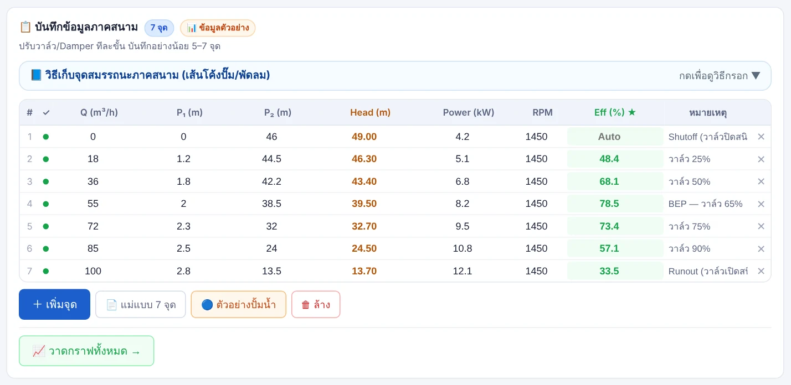
1
2
3
4
5
6
1
แถว Shutoff: Q = 0 · P₂ = 46 m · 4.2 kW
2
Head คิดให้อัตโนมัติ (สีส้ม) — แก้เองได้ถ้าวัด Head มาแล้ว
3
แถว BEP: Eff 78.5 % สูงสุดในตาราง
4
โหลดข้อมูลตัวอย่างปั๊มกลับมา
5
แม่แบบ 7 จุด — ตารางว่างพร้อมหมายเหตุตำแหน่งวาล์ว
6
วาดกราฟทั้งหมด — กดทุกครั้งหลังกรอกเสร็จ
ข้อมูลของคุณเอง: กด แม่แบบ 7 จุด แล้วกรอกทับ — ปุ่ม ＋ เพิ่มจุด เพิ่มแถวว่าง · ✕ ท้ายแถวลบแถว
ต้องมีอย่างน้อย 2 จุดที่มี Q และ Head จึงวาดกราฟได้ · ปุ่ม 🗑 ล้าง ลบทุกแถว (ถามยืนยันก่อน)
💡 เคล็ดลับ
Eff ของโรงงาน A: 48.4 → 68.1 → 78.5 → 73.4 → 57.1 → 33.5 % ขึ้นแล้วลง — รูปนี้คือเส้นโค้งปกติของปั๊มหอยโข่ง
ลองเปลี่ยนค่า (What-if): ค่าที่กรอกในแถบซ้าย
คู่มือใช้งาน · สร้างเส้นโค้งปั๊มและพัดลม (Pump & Fan Curve Builder) · ระดับ Free
12 / 25
| เปลี่ยนค่า | ประสิทธิภาพที่ BEP (%) | อ่านว่า |
|---|---|---|
| ตามเคส (η_motor 0.92 · ต่อตรง · ΔZ 3 m) | 78.5 | ค่าอ้างอิง |
| η_motor 0.88 | 82.0 | η มอเตอร์ต่ำลง → P_shaft น้อยลง → η ปั๊มดูสูงขึ้น |
| ส่งกำลังด้วยสายพาน 0.95 | 82.6 | ผลแบบเดียวกัน — ต้องใส่ให้ตรงของจริง |
| ลืมใส่ ΔZ (= 0) | 72.5 | Head หายไป 3 m ทุกจุด (36.5 m) → η ต่ำกว่าจริง |
ทำเอง: แก้ช่องในแถบซ้าย → ตารางและกราฟคำนวณใหม่เอง → แก้กลับเป็นค่าเดิม
η มอเตอร์ที่กรอกมีผลตรงกับผล — ใช้ค่าจากป้ายมอเตอร์ที่โหลดใกล้เคียงกับตอนทดสอบ
⚠️ ระวัง
กรอก η มอเตอร์สูงเกินจริง ทำให้ η ปั๊มดูต่ำกว่าจริง — อาจสรุปผิดว่าปั๊มเสื่อม
ขั้นที่ 4
แท็บ Pump/Fan Curve: อ่านเส้นโค้ง
คู่มือใช้งาน · สร้างเส้นโค้งปั๊มและพัดลม (Pump & Fan Curve Builder) · ระดับ Free
13 / 25
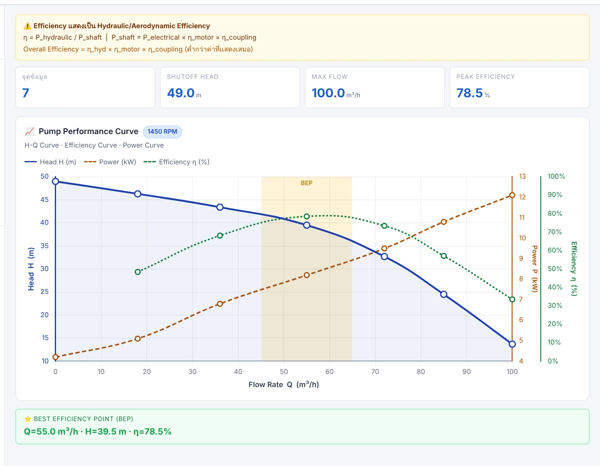
1
2
3
4
1
Shutoff Head = 49.0 m (Head ที่ Q = 0)
2
Peak Efficiency = 78.5 %
3
กราฟ 3 เส้น: Head (น้ำเงิน) · Power (ส้มประ) · Efficiency (เขียวประ)
4
BEP: Q = 55.0 m³/h · H = 39.5 m · η = 78.5 %
แถบเหลือง "BEP" = ช่วง ±18 % รอบ Q ของจุด BEP (ช่วงแสดงผลของเครื่องมือ)
Power เพิ่มตาม flow — ปั๊มหอยโข่งใบพัดแบบรัศมี (ส่วนใหญ่) กินไฟสูงสุดตอนเปิดวาล์วสุด · ปั๊มแบบไหลตามแกนกลับกัน กินไฟสูงสุดตอนวาล์วปิด
BEP ที่เครื่องมือหา = จุดที่วัดได้ ซึ่ง Eff สูงสุด ไม่ได้ประมาณระหว่างจุด — วัดถี่ขึ้นรอบ BEP จะได้ค่าละเอียดขึ้น
💡 เคล็ดลับ
เทียบกับเส้นโค้งจากผู้ผลิตที่รอบเดียวกัน: Head หรือ Eff ต่ำกว่ามาก = ใบพัดสึก/ช่องว่างแหวนกันรั่วกว้าง หรือวัดผิด — ตรวจการวัดก่อนสรุป
ขั้นที่ 5
กรอกข้อมูลเส้นระบบ (System Curve Parameters)
คู่มือใช้งาน · สร้างเส้นโค้งปั๊มและพัดลม (Pump & Fan Curve Builder) · ระดับ Free
14 / 25
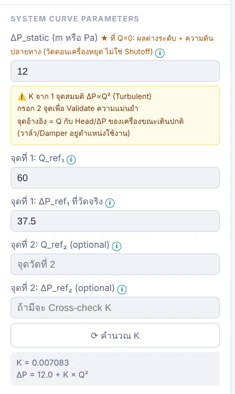
1
2
3
4
5
1
หัวคงที่ ΔP_static = ผลต่างระดับ + ความดันปลายทาง ที่ Q = 0 — 12 m
2
Q_ref = flow ขณะเดินปกติ — 60 m³/h
3
ΔP_ref = Head ของปั๊มขณะเดินปกติ — 37.5 m
4
จุดอ้างอิงที่ 2 (ไม่บังคับ) — ใช้ตรวจ K
5
ผล: K = 0.007083 · เส้นระบบ ΔP = 12 + K × Q²
หัวคงที่วัดตอนเครื่องหยุด — เช่น ผลต่างระดับน้ำต้นทาง-ปลายทาง บวกความดันที่ถังปลายทาง
จุดอ้างอิง = ค่าที่วัดตอนเดินปกติ วาล์วอยู่ตำแหน่งใช้งาน จุดนี้อยู่บนเส้นปั๊มด้วย
กรอกจุดที่ 2 แล้ว K สองค่าต่างกันไม่ถึง 10 % เครื่องมือใช้ค่าเฉลี่ย · ต่างเกิน 10 % ขึ้นคำเตือน
⚠️ ระวัง
อย่าใช้ค่าตอนปิดวาล์วขณะปั๊มเดินเป็นหัวคงที่ — ค่านั้นคือ Shutoff ของปั๊ม (49.0 m) ไม่ใช่ของระบบ
ขั้นที่ 6
แท็บ System Curve: จุดทำงาน
คู่มือใช้งาน · สร้างเส้นโค้งปั๊มและพัดลม (Pump & Fan Curve Builder) · ระดับ Free
15 / 25
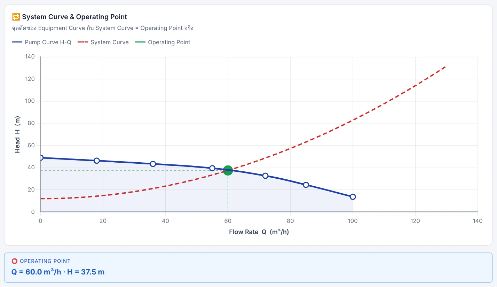
1
2
1
เส้นปั๊ม (น้ำเงิน) กับเส้นระบบ (แดงประ)
2
จุดทำงาน: Q = 60.0 m³/h · H = 37.5 m
จุดทำงานของโรงงาน A ตรงกับจุดอ้างอิงที่วัด (60 m³/h) — แปลว่าข้อมูลสอดคล้องกัน
เทียบจุดทำงานกับ BEP (55.0 m³/h): ปั๊มเดินที่ flow สูงกว่า BEP เล็กน้อย ยังอยู่ในแถบเหลือง
ถ้าไม่มีจุดตัด (เส้นระบบสูงกว่าเส้นปั๊มทั้งเส้น) จุดเขียวไม่แสดง — ตรวจหัวคงที่และจุดอ้างอิง
💡 เคล็ดลับ
เส้นระบบที่หรี่วาล์วไว้มาก = ชันมาก → จุดทำงานเลื่อนไปทางซ้าย ห่างจาก BEP — โอกาสประหยัดจากการลดรอบแทนการหรี่วาล์ว
ขั้นที่ 7
แท็บ Affinity Laws: ประเมิน VFD
คู่มือใช้งาน · สร้างเส้นโค้งปั๊มและพัดลม (Pump & Fan Curve Builder) · ระดับ Free
16 / 25
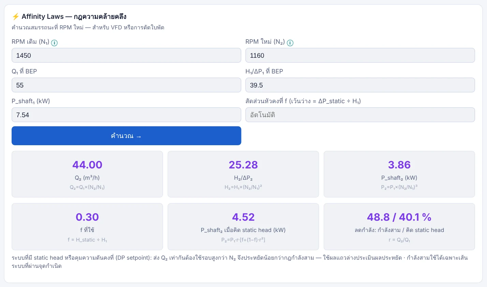
1
2
3
4
5
6
7
8
1
RPM เดิม N₁ = 1,450
2
RPM ใหม่ N₂ = 1,160 (ลด 20 %)
3
Q₁ ที่ BEP = 55 m³/h
4
H₁ ที่ BEP = 39.5 m
5
P_shaft₁ = 7.54 kW (P_elec × η มอเตอร์)
6
f = สัดส่วนหัวคงที่ — เว้นว่างให้คิดจาก 12 ÷ 39.5
7
กฎกำลังสาม: P_shaft₂ = 3.86 kW
8
คิดหัวคงที่: P_shaft₂ = 4.52 kW
กดปุ่ม คำนวณ → ทุกครั้งที่แก้ค่า · ผล: Q₂ 44.00 m³/h · H₂ 25.28 m · f ที่ใช้ 0.30
กำลังลด: กำลังสาม 48.8 % / คิดหัวคงที่ 40.1 % — ใช้ตัวหลังประเมินผลประหยัด
ระบบที่มีหัวคงที่: ส่ง Q₂ เท่ากันต้องใช้รอบสูงกว่า N₂ จึงประหยัดน้อยกว่ากฎกำลังสาม
⚠️ ระวัง
ช่อง P_shaft₁ ต้องเป็นกำลังที่เพลา ไม่ใช่ kW ที่มิเตอร์อ่าน — ดูค่าในคอลัมน์ P_shaft ของแท็บรายงาน
ลองเปลี่ยนค่า (What-if): ลดรอบเท่าไร ประหยัดเท่าไร
คู่มือใช้งาน · สร้างเส้นโค้งปั๊มและพัดลม (Pump & Fan Curve Builder) · ระดับ Free
17 / 25
| กรณี | Q₂ (m³/h) | กำลังลด: กำลังสาม (%) | กำลังลด: คิดหัวคงที่ (%) |
|---|---|---|---|
| N₂ = 1,305 RPM (ลด 10 %) | 49.50 | 27.1 | 21.9 |
| N₂ = 1,160 RPM (ลด 20 %) ตามเคส | 44.00 | 48.8 | 40.1 |
| N₂ = 1,015 RPM (ลด 30 %) | 38.50 | 65.7 | 54.9 |
| ลด 20 % · f = 0 (เส้นระบบผ่านจุดกำเนิด) | 44.00 | 48.8 | 48.8 |
| ลด 20 % · f = 0.5 (คุมความดันคงที่) | 44.00 | 48.8 | 34.4 |
ทำเอง: แก้ช่อง RPM ใหม่ หรือช่อง f → กด คำนวณ → → แก้กลับเป็นค่าเดิม
f = 0 สองคอลัมน์เท่ากัน — กฎกำลังสามใช้ได้เฉพาะระบบไม่มีหัวคงที่ เช่น วงจรปิดที่ไม่คุมความดัน
ระบบหอผึ่งน้ำ/ส่งน้ำขึ้นที่สูง หรือคุมความดันปลายทางคงที่ มี f สูง — ผลประหยัดจริงน้อยกว่ากำลังสามมาก
⚠️ ระวัง
กำลังที่ลดเป็นกำลังที่เพลา — ไฟฟ้าที่ลดจริงยังขึ้นกับ η มอเตอร์ที่โหลดต่ำและการสูญเสียของ VFD ควรวัดยืนยันหลังติดตั้ง
กราฟ Q–H ก่อนและหลังลดรอบ
คู่มือใช้งาน · สร้างเส้นโค้งปั๊มและพัดลม (Pump & Fan Curve Builder) · ระดับ Free
18 / 25
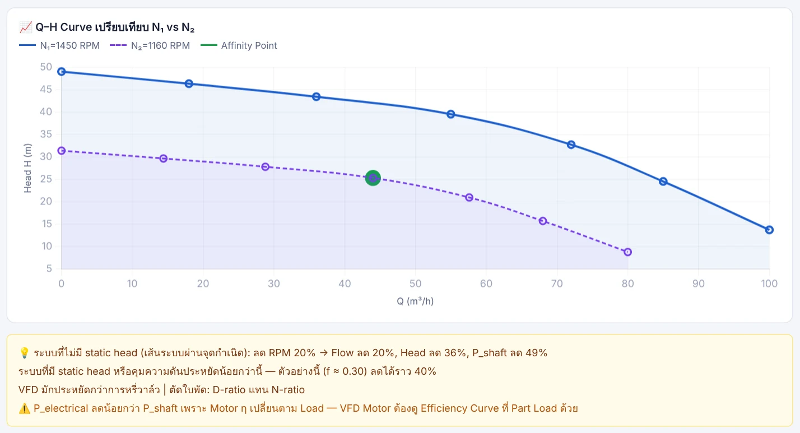
เส้นทึบ = รอบเดิม 1,450 · เส้นประม่วง = รอบใหม่ 1,160 — ทุกจุดเลื่อนตามกฎ Q ∝ N · H ∝ N²
จุดเขียว = จุด BEP ที่รอบใหม่ (44.00 m³/h · 25.28 m)
กรอบเหลืองด้านล่างสรุปข้อจำกัด: ใช้กับปั๊ม/พัดลมแบบหอยโข่ง ไม่ใช้กับปั๊มแบบ positive displacement
💡 เคล็ดลับ
ตัดใบพัด (impeller trim) ใช้สูตรเดียวกันโดยใช้อัตราส่วนเส้นผ่านศูนย์กลาง D₂/D₁ แทน N₂/N₁ — เป็นค่าประมาณสำหรับการตัดไม่มาก
ขั้นที่ 8
แท็บรายงาน และ Export CSV
คู่มือใช้งาน · สร้างเส้นโค้งปั๊มและพัดลม (Pump & Fan Curve Builder) · ระดับ Free
19 / 25
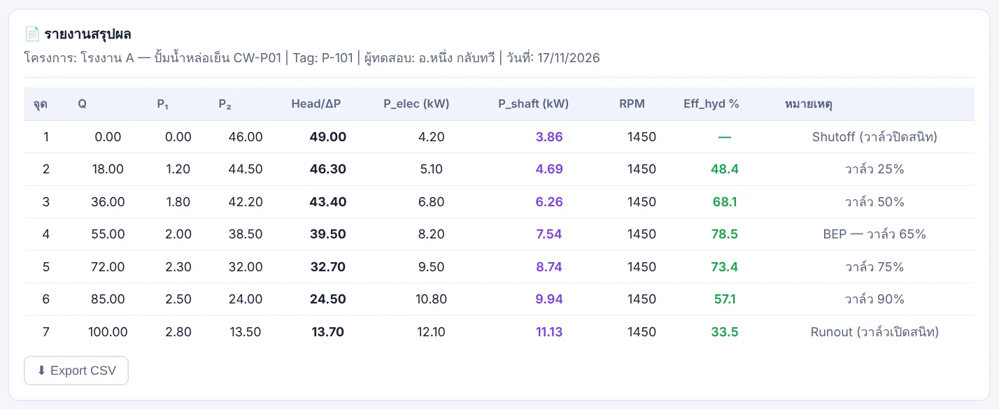
หัวรายงานดึงจากข้อมูลทั่วไป · ตารางเรียงตาม Q จากน้อยไปมาก 7 จุด
คอลัมน์ P_shaft (ม่วง) = P_elec × η มอเตอร์ × η การส่งกำลัง — ใช้ค่านี้กรอกในแท็บ Affinity
Export CSV = ไฟล์ตารางเปิดด้วย Excel ได้ · Print บนแถบน้ำเงิน = พิมพ์หรือบันทึกเป็น PDF
รายงานสร้างตอนกด วาดกราฟทั้งหมด — แก้ข้อมูลแล้วกดอีกครั้งเพื่ออัปเดต
⚠️ ระวัง
ไฟล์ CSV เก็บเฉพาะตารางจุดวัด — ค่าในแถบซ้าย (η, ΔZ, เส้นระบบ) จดแยกไว้ในรายงานผลการตรวจ
โหมดพัดลม: ตัวอย่างโรงงาน B
คู่มือใช้งาน · สร้างเส้นโค้งปั๊มและพัดลม (Pump & Fan Curve Builder) · ระดับ Free
20 / 25
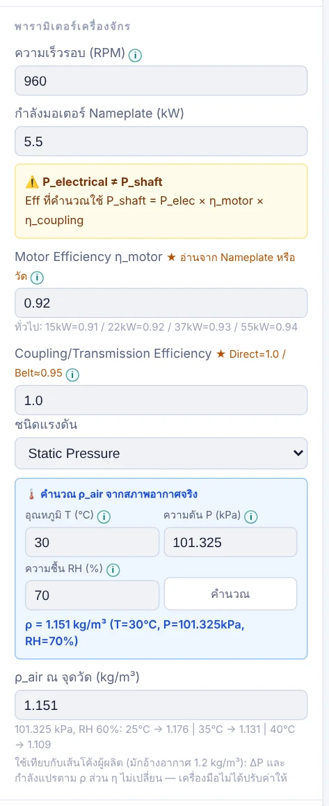
1
2
3
4
1
อุณหภูมิอากาศ ณ จุดวัด
2
ความชื้นสัมพัทธ์
3
ρ_air ณ จุดวัด = 1.151 kg/m³ หลังกด คำนวณ (ตัวอย่างโหลดค่า 1.2 ไว้)
4
ชนิดแรงดันที่วัด: Static หรือ Total
กด 💨 พัดลม แล้วกด 🟠 ตัวอย่างพัดลม — โรงงาน B พัดลม 960 RPM มอเตอร์ 5.5 kW (ข้อมูลสมมุติ)
ตาราง: Q เป็น CMH · P₁ P₂ เป็น Pa · ΔP = P₂ − P₁ (ไม่มี ΔZ)
ρ_air ไม่มีผลกับประสิทธิภาพ (η = Q·ΔP ÷ P_shaft) — ใช้เทียบกับเส้นโค้งผู้ผลิตที่มักอ้างอากาศ 1.2 kg/m³
⚠️ ระวัง
บันทึกว่าวัด Static หรือ Total pressure — ประสิทธิภาพสองแบบนี้เทียบกันตรง ๆ ไม่ได้ ต้องเทียบกับเส้นผู้ผลิตชนิดเดียวกัน
เส้นโค้งพัดลม โรงงาน B
คู่มือใช้งาน · สร้างเส้นโค้งปั๊มและพัดลม (Pump & Fan Curve Builder) · ระดับ Free
21 / 25
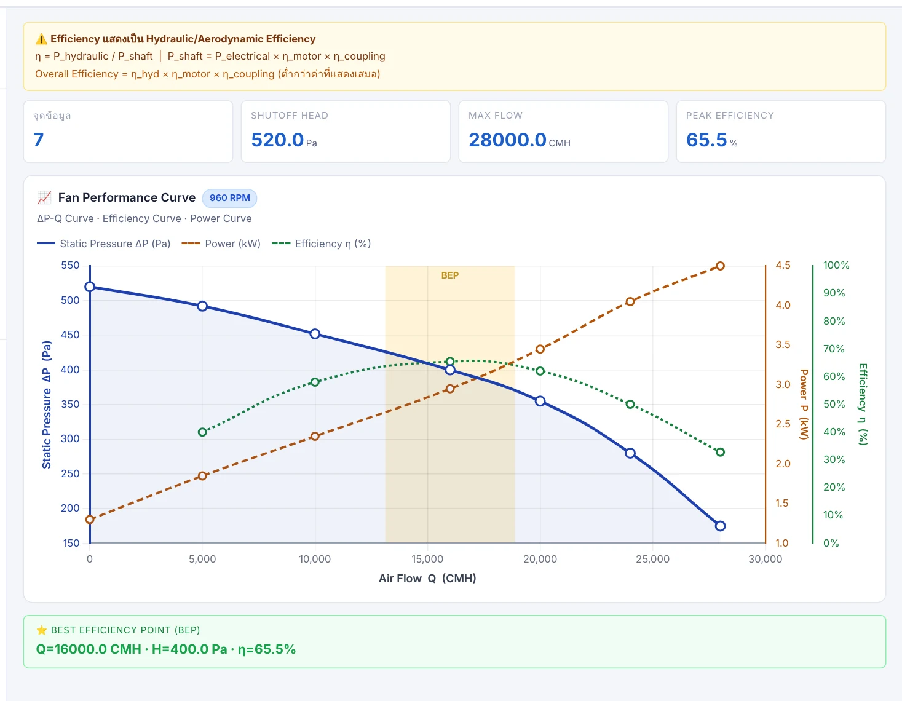
Shutoff (damper ปิด) ΔP = 520.0 Pa · BEP: Q = 16000.0 CMH · ΔP = 400.0 Pa · η = 65.5 %
จุดทำงานจากแท็บ System Curve: Q = 17946.7 CMH · ΔP = 378.1 Pa
ขั้นตอนเหมือนปั๊มทุกขั้น — เปลี่ยนแค่หน่วยและไม่มี ΔZ
⚠️ ระวัง
พัดลมแบบแกน (axial) บางรุ่นไม่ควรเดินที่ damper ปิดหรือเกือบปิด — ตรวจคู่มือผู้ผลิตก่อนเก็บจุด Shutoff
ข้อผิดพลาดที่พบบ่อย
คู่มือใช้งาน · สร้างเส้นโค้งปั๊มและพัดลม (Pump & Fan Curve Builder) · ระดับ Free
22 / 25
✗ กรอก bar ลงช่อง m
✓ น้ำ 1 bar ≈ 10.2 m — แปลงก่อนกรอกทุกจุด
✗ ลืม ΔZ
✓ วัดระยะสูงระหว่างจุดต่อเกจสองตัว ไม่ใช่ระดับพื้น
✗ ใช้ kW มิเตอร์เป็น P_shaft
✓ P_shaft = P_elec × η มอเตอร์ × η การส่งกำลัง
✗ อ่านค่าตอนยังไม่นิ่ง
✓ เปลี่ยนวาล์วแล้วรอให้นิ่งก่อนอ่านทุกค่าพร้อมกัน
✗ หัวคงที่จากการปิดวาล์ว
✓ ปิดวาล์วขณะเดินได้ Shutoff ของปั๊ม ไม่ใช่ของระบบ
✗ จุดอ้างอิงไม่อยู่บนเส้นปั๊ม
✓ ใช้ Q กับ Head ขณะเดินปกติ ที่วัดพร้อมกัน
✗ สรุปผลประหยัดด้วยกำลังสาม
✓ ระบบมีหัวคงที่ใช้แถวคิด static head
✗ ไม่กดวาดกราฟใหม่
✓ แก้ตารางแล้วกด วาดกราฟทั้งหมด อีกครั้ง
แบบฝึกหัด: โรงงาน C
คู่มือใช้งาน · สร้างเส้นโค้งปั๊มและพัดลม (Pump & Fan Curve Builder) · ระดับ Free
23 / 25
| ข้อมูล | ค่า |
|---|---|
| ปั๊ม · รอบ · η มอเตอร์ · ต่อตรง · ΔZ | 2,900 RPM · 0.90 · 1.0 · 0.5 m |
| Q (m³/h) | 0 · 20 · 40 · 60 · 80 |
| P₁ (m) | 2.0 · 1.9 · 1.7 · 1.4 · 1.0 |
| P₂ (m) | 52.0 · 50.5 · 46.0 · 38.5 · 27.5 |
| Power (kW) | 6.0 · 7.2 · 8.6 · 10.0 · 11.2 |
| หัวคงที่ · จุดอ้างอิงขณะเดินปกติ | 15 m · 50 m³/h · 41.2 m |
| Affinity: N₁ → N₂ · Q₁ · H₁ · P_shaft₁ | 2,900 → 2,600 · 60 · 37.6 · 9.0 kW |
คำถาม — กรอกแล้วตอบ
1
Shutoff Head = ______ m
2
BEP: Q = ______ m³/h · η = ______ %
3
K = ______ · จุดทำงาน Q = ______ m³/h
4
ลดรอบเป็น 2,600: กำลังลด ______ % (กำลังสาม) / ______ % (คิดหัวคงที่)
💡 เคล็ดลับ
เริ่มจากกด แม่แบบ 7 จุด แล้วลบ 2 แถวที่เกิน · กรอก Head ปล่อยว่างให้เครื่องมือคิด
เฉลยแบบฝึกหัด โรงงาน C
คู่มือใช้งาน · สร้างเส้นโค้งปั๊มและพัดลม (Pump & Fan Curve Builder) · ระดับ Free
24 / 25
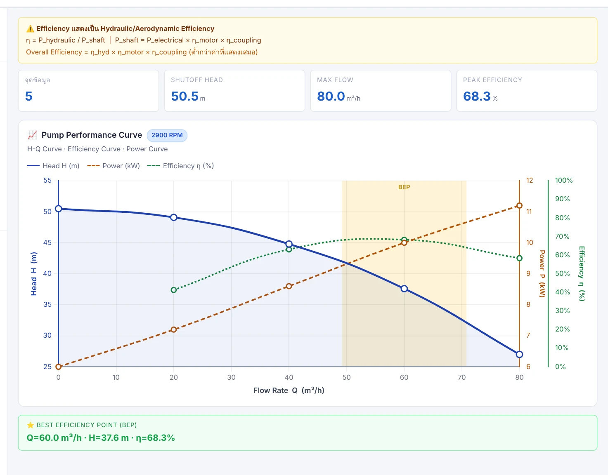
1) Shutoff Head = 50.5 m (52.0 − 2.0 + 0.5)
2) BEP ที่ Q = 60.0 m³/h · H = 37.6 m · η = 68.3 %
3) K = 0.010480 · จุดทำงาน Q = 50.0 m³/h · H = 41.2 m (ตรงจุดอ้างอิง)
4) f ที่ใช้ 0.40 → กำลังลด 27.9 % (กำลังสาม) / 20.9 % (คิดหัวคงที่) · P_shaft₂ = 7.12 kW
✓ ผ่าน
ได้ตัวเลขตรงกัน = ใช้เครื่องมือเป็นแล้ว · ภาพแสดงแท็บ Pump/Fan Curve ของโรงงาน C
สรุป 1 หน้า (พิมพ์ติดไว้ข้างคอมพิวเตอร์)
คู่มือใช้งาน · สร้างเส้นโค้งปั๊มและพัดลม (Pump & Fan Curve Builder) · ระดับ Free
25 / 25
1
ชนิดเครื่อง
ปั๊มน้ำ / พัดลม + ข้อมูลทั่วไป
2
แถบซ้าย
RPM · η มอเตอร์ · η ส่งกำลัง · ของเหลว · ΔZ
3
ตาราง
Q · P₁ · P₂ (m) · kW ตั้งแต่ Shutoff ถึงเปิดสุด 5–7 จุด
4
วาดกราฟ
อ่าน Shutoff · BEP · Peak η
5
เส้นระบบ
หัวคงที่ + จุดอ้างอิงขณะเดินปกติ → K · จุดทำงาน
6
Affinity
N₂ · Q₁ H₁ P_shaft₁ ที่ BEP → ใช้ผลแถวคิดหัวคงที่
7
รายงาน
Export CSV / Print
อ่านผลแล้วตรวจ
☐
bar → m (×10.2 สำหรับน้ำ)
☐
ΔZ ระหว่างจุดต่อเกจ
☐
η มอเตอร์จากป้าย
☐
หัวคงที่วัดตอนเครื่องหยุด
☐
P_shaft ไม่ใช่ kW มิเตอร์
อ.หนึ่ง กลับทวี / Aj. Nueng Klubtavee
tripleeenergytools.com
tripleeenergytools.com